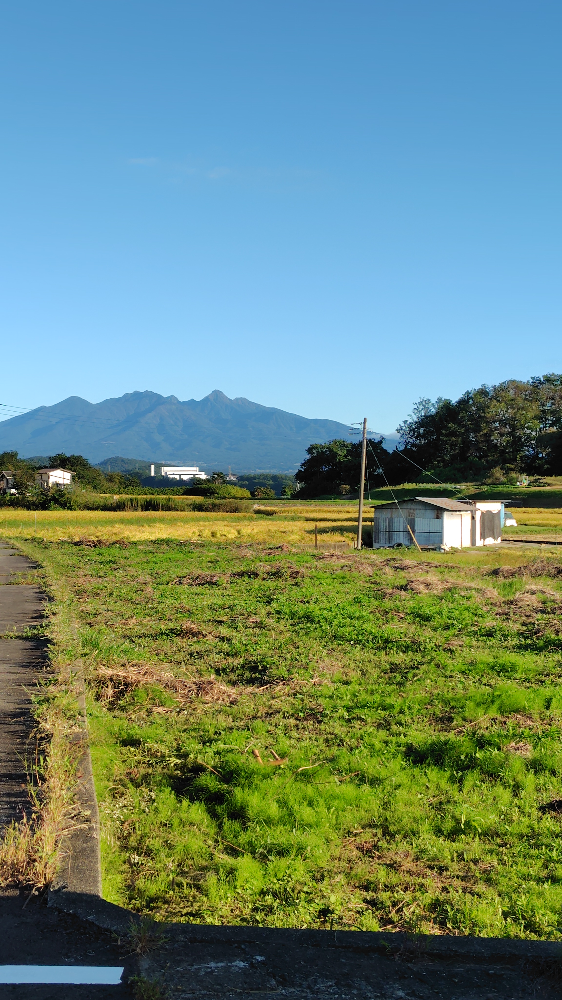
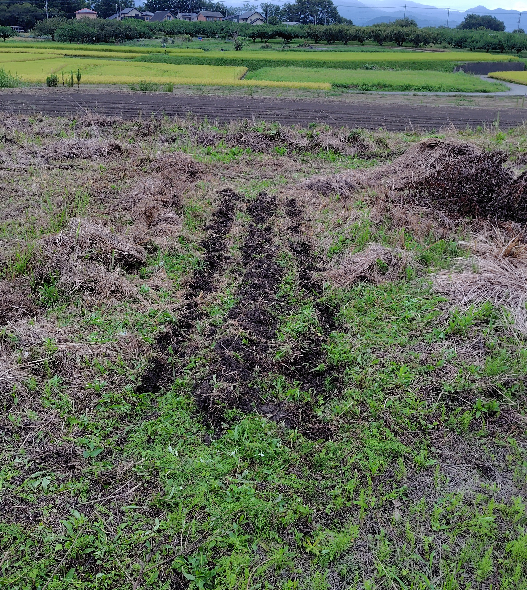
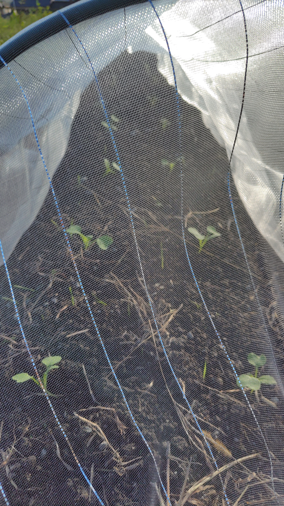
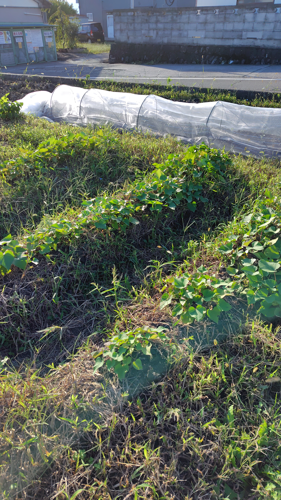

01
耕作放棄地から
使われなくなっていた畑を、草を刈りながら少しずつ畑として整えています。

ABOUT

MITSURU FARMは、山梨県韮崎市で始めた小さな農園です。
農業はまだ始まったばかり。畑を耕し、草を刈り、種をまき、野菜を育てる。その一つひとつの作業から、土や季節について学んでいます。
自然栽培を参考に、できるだけ畑の環境を活かしながら、野菜と人が無理なく続けられる農業を目指しています。
OUR FARM
使われなくなっていた畑を、草を刈りながら少しずつ畑として整えています。
土や草、季節の変化を観察しながら、できるだけ畑の力を活かした野菜づくりを試しています。
家庭菜園から始めて経験を積み、将来的には農業として続けられる規模を目指しています。
VEGETABLES
その時期、その畑で育つ野菜を少しずつ増やしていきます。

秋から冬へ。まずは大根から。

土の状態を見ながら育てます。

草と土の力を借りて育てています。